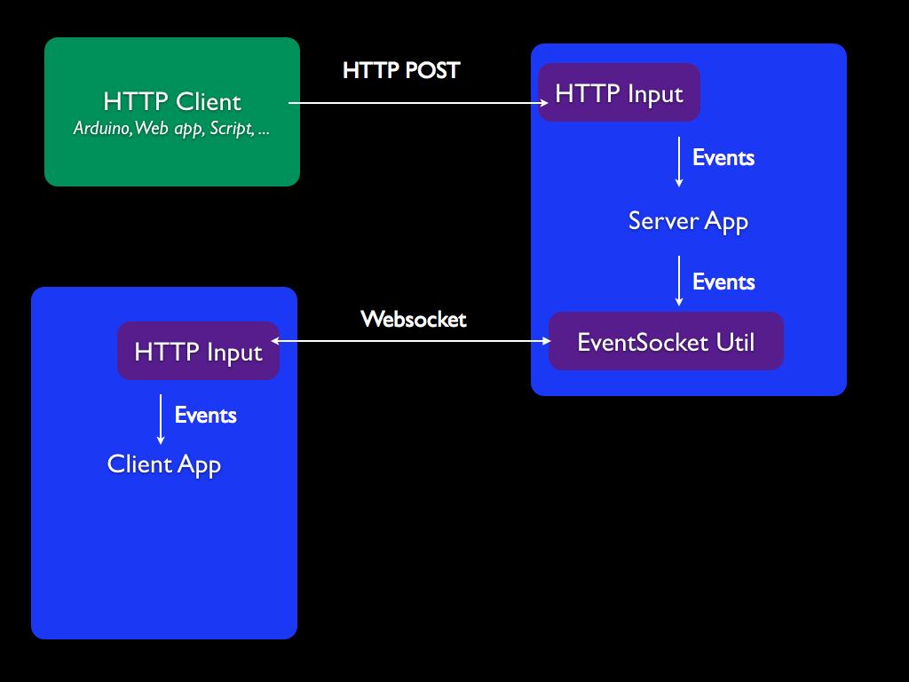

The goal is to create custom objects that can act as controllers for applications built with the framework.
For instance, the videolist example has code for a simple "remote" pictured on the right.
This object features two buttons:
We'll show how to bind both to control the videolist example application.
An arduino with an Ethernet shield can't easily send packets directly to a browser application. There are simple websockets code for arduino but they won't support legacy browsers like socket.io does.
For this reason we have to create a proxy that will basically act as an event forwarder.
This server-side application (using the Node.js adapter could also perform any other action based on what events it receives but in this example it will just act as forwarder.
Here are the files used in this example:
examples/videolist/arduino/simple_controller.pde The simple C-like code to be uploaded on the Arduino. It supposes that the red button is connected to pins GND and 11, and that the switch is connected to pins GND, 9 and 10. You will need to edit the static IP address configuration on top of the file.examples/videolist/arduinosocket.cli.js The init code of the server-side app. You can start it with fab arduino.lib/adapters/node/inputs/http.js The HTTP Input of the Node.js adapter which receives the HTTP POSTs from the Arduino and forwards them as events to the applib/adapters/node/utils/eventsocket.js The socket.io server that listens to any event on the app and forwards them in the socket.lib/adapters/browser/inputs/http.js The HTTP Input of the Browser adapter which is connected to the EventSocket (also with socket.io). It forwards requests as events on the app.After going through all these components (in a few milliseconds usually), a push on the physical red button triggers
a "input",["random"] event on the browser app that can be subscribed to in order to perform the required action.
Happy hacking! Feel free to share your projects with the community to inspire other people ;-)